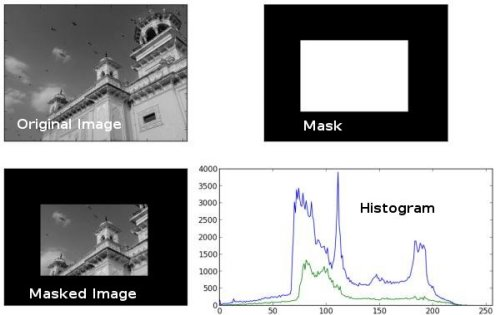

Histograms - 1 : Find, Plot, Analyze !!!
Goal
Learn to
- Find histograms, using both OpenCV and Numpy functions
- Plot histograms, using OpenCV and Matplotlib functions
- You will see these functions : cv2.calcHist(), np.histogram() etc.
Theory
So what is histogram ? You can consider histogram as a graph or plot, which gives you an overall idea about the intensity distribution of an image. It is a plot with pixel values (ranging from 0 to 255, not always) in X-axis and corresponding number of pixels in the image on Y-axis.
It is just another way of understanding the image. By looking at the histogram of an image, you get intuition about contrast, brightness, intensity distribution etc of that image. Almost all image processing tools today, provides features on histogram. Below is an image from Cambridge in Color website, and I recommend you to visit the site for more details.

You can see the image and its histogram. (Remember, this histogram is drawn for grayscale image, not color image). Left region of histogram shows the amount of darker pixels in image and right region shows the amount of brighter pixels. From the histogram, you can see dark region is more than brighter region, and amount of midtones (pixel values in mid-range, say around 127) are very less.
Find Histogram
Now we have an idea on what is histogram, we can look into how to find this. Both OpenCV and Numpy come with in-built function for this. Before using those functions, we need to understand some terminologies related with histograms.
BINS :The above histogram shows the number of pixels for every pixel value, ie from 0 to 255. ie you need 256 values to show the above histogram. But consider, what if you need not find the number of pixels for all pixel values separately, but number of pixels in a interval of pixel values? say for example, you need to find the number of pixels lying between 0 to 15, then 16 to 31, …, 240 to 255. You will need only 16 values to represent the histogram. And that is what is shown in example given in OpenCV Tutorials on histograms.
So what you do is simply split the whole histogram to 16 sub-parts and value of each sub-part is the sum of all pixel count in it. This each sub-part is called “BIN”. In first case, number of bins were 256 (one for each pixel) while in second case, it is only 16. BINS is represented by the term histSize in OpenCV docs.
DIMS : It is the number of parameters for which we collect the data. In this case, we collect data regarding only one thing, intensity value. So here it is 1.
RANGE : It is the range of intensity values you want to measure. Normally, it is [0,256], ie all intensity values.
1. Histogram Calculation in OpenCV
So now we use cv2.calcHist() function to find the histogram. Let’s familiarize with the function and its parameters :
cv2.calcHist(images, channels, mask, histSize, ranges[, hist[, accumulate]])
- images : it is the source image of type uint8 or float32. it should be given in square brackets, ie, “[img]”.
- channels : it is also given in square brackets. It is the index of channel for which we calculate histogram. For example, if input is grayscale image, its value is [0]. For color image, you can pass [0], [1] or [2] to calculate histogram of blue, green or red channel respectively.
- mask : mask image. To find histogram of full image, it is given as “None”. But if you want to find histogram of particular region of image, you have to create a mask image for that and give it as mask. (I will show an example later.)
- histSize : this represents our BIN count. Need to be given in square brackets. For full scale, we pass [256].
- ranges : this is our RANGE. Normally, it is [0,256].
So let’s start with a sample image. Simply load an image in grayscale mode and find its full histogram.
img = cv2.imread('home.jpg',0) hist = cv2.calcHist([img],[0],None,[256],[0,256])
hist is a 256x1 array, each value corresponds to number of pixels in that image with its corresponding pixel value.
2. Histogram Calculation in Numpy
Numpy also provides you a function, np.histogram(). So instead of calcHist() function, you can try below line :
hist,bins = np.histogram(img.ravel(),256,[0,256])
hist is same as we calculated before. But bins will have 257 elements, because Numpy calculates bins as 0-0.99, 1-1.99, 2-2.99 etc. So final range would be 255-255.99. To represent that, they also add 256 at end of bins. But we don’t need that 256. Upto 255 is sufficient.
OpenCV function is more faster than (around 40X) than np.histogram(). So stick with OpenCV function.
Now we should plot histograms, but how?
Plotting Histograms
There are two ways for this,
- Short Way : use Matplotlib plotting functions
- Long Way : use OpenCV drawing functions
1. Using Matplotlib
Matplotlib comes with a histogram plotting function : matplotlib.pyplot.hist()
It directly finds the histogram and plot it. You need not use calcHist() or np.histogram() function to find the histogram. See the code below:
import cv2 import numpy as np from matplotlib import pyplot as plt img = cv2.imread('home.jpg',0) plt.hist(img.ravel(),256,[0,256]); plt.show()
You will get a plot as below :

Or you can use normal plot of matplotlib, which would be good for BGR plot. For that, you need to find the histogram data first. Try below code:
import cv2 import numpy as np from matplotlib import pyplot as plt img = cv2.imread('home.jpg') color = ('b','g','r') for i,col in enumerate(color): histr = cv2.calcHist([img],[i],None,[256],[0,256]) plt.plot(histr,color = col) plt.xlim([0,256]) plt.show()
Result:

You can deduct from the above graph that, blue has some high value areas in the image (obviously it should be due to the sky)
2. Using OpenCV
Well, here you adjust the values of histograms along with its bin values to look like x,y coordinates so that you can draw it using cv2.line() or cv2.polyline() function to generate same image as above. This is already available with OpenCV-Python2 official samples. Check the code at samples/python/hist.py.
Application of Mask
We used cv2.calcHist() to find the histogram of the full image. What if you want to find histograms of some regions of an image? Just create a mask image with white color on the region you want to find histogram and black otherwise. Then pass this as the mask.
img = cv2.imread('home.jpg',0) # create a mask mask = np.zeros(img.shape[:2], np.uint8) mask[100:300, 100:400] = 255 masked_img = cv2.bitwise_and(img,img,mask = mask) # Calculate histogram with mask and without mask # Check third argument for mask hist_full = cv2.calcHist([img],[0],None,[256],[0,256]) hist_mask = cv2.calcHist([img],[0],mask,[256],[0,256]) plt.subplot(221), plt.imshow(img, 'gray') plt.subplot(222), plt.imshow(mask,'gray') plt.subplot(223), plt.imshow(masked_img, 'gray') plt.subplot(224), plt.plot(hist_full), plt.plot(hist_mask) plt.xlim([0,256]) plt.show()
See the result. In the histogram plot, blue line shows histogram of full image while green line shows histogram of masked region.
Additional Resources
Exercises
See also:
Numpy has another function, np.bincount() which is much faster than (around 10X) np.histogram(). So for one-dimensional histograms, you can better try that. Don’t forget to set minlength = 256 in np.bincount. For example, hist = np.bincount(img.ravel(),minlength=256)